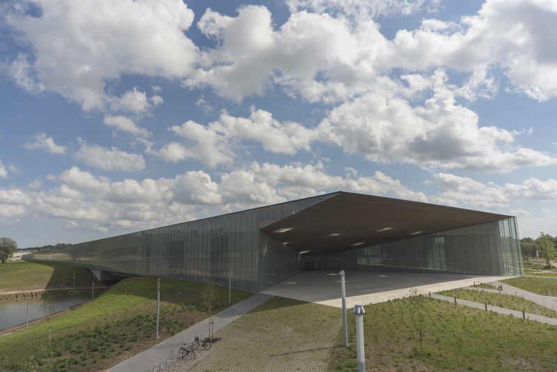
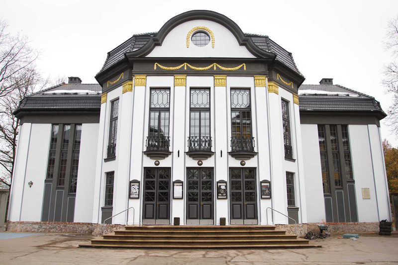

Tartu vaatamisväärsused
Tartu on üks vanemaid linnu Eestis, teda kirjalikult mainitakse esimest korda aastas 1030, aga inimasutus oli seal juba V sajandil. Tartu oli läbi oma ajaloo kuulnud erinevatesse riikidesse. Ja kõik need jätsid linna ilmesse oma jälje. Tänu oma rikkalikule ja pikkale ajaloole Tartus on palju vaatamisväärsusi, mida tasuks külastada
Muuseumid

Tartus on umbes 20 muuseumid, teil on võimalus külastada kõik neid, aga kui aeg on piiratud, tasub kindlasti külastada järgmisi muuseume: Eesti rahva muuseum, Tartu ülikooli muuseum ja AHHAA. Eesti rahva muuseumis teil on võimalus rohkem teada eestlastest, nende keeltest ja nende ajaloost. Ahhaa on suurim teadusmuuseum baltimaades, kus on palju näitusi erinevate teemade kohta. Tartu muuseumis, mis asub ajaloolises toomkirikus, ootavad teid palju püsiekspositsiooni, mitte ainult kunsti, aga ka teisi teemade kohta.
Teater

Tartu on ka tuntud oma teatrite poolt. Tartus asub esimene eestikeelne teater Eestis: teater Vanemuise, mis on nimitud eesti laulaseltsi järgi, mis on omakorras nimitud vanaeesti jumaluse järgi. On ka Tartus teised teatrit: Tartu Üliõpilasteater, Sadamateater ja Karlova teater, vähemalt ühes neist peab olema näitus, mis teile silma torkab. Tasuks ka mainida Tartu laulaväljak, kus peeti Eesti esimene laulupidu.
Arhitektuur
 Tartus on palju eri aegadel ja stiilides ehitatud arhitektuuriliselt olulis hooneid. Nende märkamiseks on piisav lihtsalt linnas jalutama hakata, enamik neist hoonetest(ja mitte ainult hooned) asub vanalinnas, näiteks: Tartu raekoda, Tartu ülikooli peahoone, Inglis- ja Kuradisillad. Tasuks ka külastada või lihtsalt vaadata Tartu kirikuid.
Tartus on palju eri aegadel ja stiilides ehitatud arhitektuuriliselt olulis hooneid. Nende märkamiseks on piisav lihtsalt linnas jalutama hakata, enamik neist hoonetest(ja mitte ainult hooned) asub vanalinnas, näiteks: Tartu raekoda, Tartu ülikooli peahoone, Inglis- ja Kuradisillad. Tasuks ka külastada või lihtsalt vaadata Tartu kirikuid.
Mounumentid
 Nagu ka teistes linnas on Tartus palju erinevaid monumente: kirjanikule, teadlastele, sõjapealikutele, kuningatele, poliitikutele, heliloojatele ja isegi tudengitele. Tartus monumendiga autasustatud inimesed: Rootsi kuningas Karl Gustav Adolf II, vene kindralfelmarssal Michael Andreas Barclay de Tolly, vene tuntud kirurg Nikolai Pirogov ja baltisaksa arstiteadlane Karl Ernst von Baer.
Nagu ka teistes linnas on Tartus palju erinevaid monumente: kirjanikule, teadlastele, sõjapealikutele, kuningatele, poliitikutele, heliloojatele ja isegi tudengitele. Tartus monumendiga autasustatud inimesed: Rootsi kuningas Karl Gustav Adolf II, vene kindralfelmarssal Michael Andreas Barclay de Tolly, vene tuntud kirurg Nikolai Pirogov ja baltisaksa arstiteadlane Karl Ernst von Baer.
Kirikud
 Minu arvates tasuks ka mainida Tartu ilusaid kirikuid. Tartus asuvad 15 kirikud: nii luterlaseid, kui ka õigusuklikuid ja katoliiklaseid. Tänu linna vanuse on võimalik näha erinevate ajastute kirikuid. Kõige vanem kirik Tartus on loomulikult Tartu Toomikirik, mis rajati 13. sajandil, kahjuks tänapäeval kirik on osaliselt hävitatud, hoonel puudub katus ja klaasid aknadel. Taastatud osas alates 1981. aastast asub Tartu Ülikooli muuseum. Sellel fotol on Tartu Pauluse kirik, mis ehitati 1915 - 1919 aastatel, kiriku arhitekt oli Gottlieb Eliel Saarinen, soomlane, kelle proektid realiseeriti mitte ainult Eestis, aga ka Soomes ja USAs.
Minu arvates tasuks ka mainida Tartu ilusaid kirikuid. Tartus asuvad 15 kirikud: nii luterlaseid, kui ka õigusuklikuid ja katoliiklaseid. Tänu linna vanuse on võimalik näha erinevate ajastute kirikuid. Kõige vanem kirik Tartus on loomulikult Tartu Toomikirik, mis rajati 13. sajandil, kahjuks tänapäeval kirik on osaliselt hävitatud, hoonel puudub katus ja klaasid aknadel. Taastatud osas alates 1981. aastast asub Tartu Ülikooli muuseum. Sellel fotol on Tartu Pauluse kirik, mis ehitati 1915 - 1919 aastatel, kiriku arhitekt oli Gottlieb Eliel Saarinen, soomlane, kelle proektid realiseeriti mitte ainult Eestis, aga ka Soomes ja USAs.